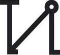
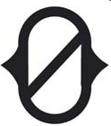
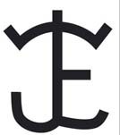
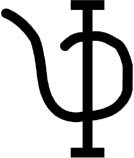

24
Domingo
 Castilla y León Televisión
Castilla y León Televisión
(17:45)
 Ver corrida de toros
Ver corrida de toros
Sahagún (León)
Final del IV Circuito
de Novilladas de Castilla y León
Novillos de
Juan Luis Fraile
 Novillos de
Novillos de
Castillejo de Huebra
Manuel Martín
Mario Navas
Pepe Luis
Cirugeda

One Toro
(18:30)
Madrid
Las Ventas
 Toro de
Toro de
Partido de Resina
Toro de
Samuel Flores
 Toro de
Toro de
Peñajara de Casta Jijona
Toro de
José Escolar
Toro de
Pedraza de Yeltes
 Toro de
Toro de
La Palmosilla
Serafín Marín
Rubén Pinar
Gómez del Pilar